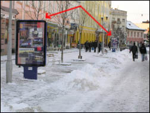
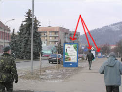
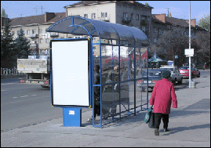
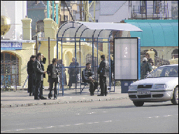
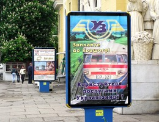
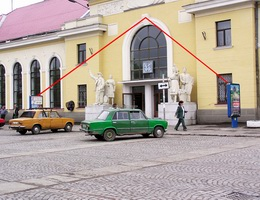

Адресна програма Назад На головну |
Розділ "Сіті-лайти"
Конструкції рекламних щитів розміром 1.2х1.8м відповідають всім сучасним вимогам дизайну. Оснащені внутрішнім світлом.  Окремим пунктом виступають сіті-лайти поєднані з автобусними зупинками сучасних форм, встановлені нашим агентством у самих жвавих місцях м. Ужгорода, а саме - проспект Свободи, площа Б.Хмельницького   Також Вам пропонуємо нові сіті-лайти на залізничному вокзалі в м. Мукачево:  
|